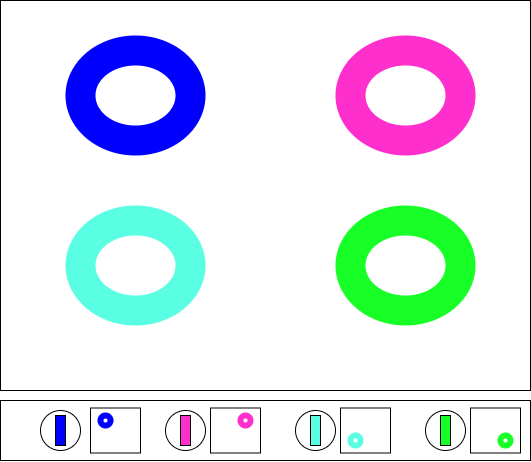

Olá! Me chamo Jacques, atuo com desenvolvimento e testes de software, e estou atualmente cursando a disciplina de Desenvolvimento para Internet 1 na pós graduação em Desenvolvimento Web e Mobile.
Minha atuação enquanto projetista vai além do desenvolvimento, atinge também o pensamento crítico e a aplicação de boas práticas para a criação de interfaces amigáveis e acessíveis, o desenvolvimento de soluções que sejam acessíveis e fáceis de usar é importante para que as aplicações desenvolvidas possam atingir um maior público, facilitando seu uso e evitando problemas.
A nova interface proposta para o fogão visa melhorar a usabilidade e a acessibilidade do aparelho, tornando-o mais intuitivo e fácil de usar para todos os usuários. Abaixo é apresentada a imagem da interface do novo Fogão:
Conceito da nova interface:
A ideia da nova interface é simplificar o uso do fogão, fazendo o uso principalmente de texturas elevadas para facilitar a identificação dos botões através do mapeamento lateral ao botão principal, o qual permite sentir o mapa da localização da boca que será atendida, tanto visualmente quanto através do toque.
Necessidades que a interface busca atender:
Facilidade de entendimento e uso, especialmente para pessoas com deficiências visuais ou motoras, além de proporcionar uma experiência mais agradável e segura para todos os usuários.
Como foram aplicados os princípios de usabilidade e acessibilidade no design:
A interface foi projetada com botões grandes e bem espaçados, com texturas diferenciadas para facilitar a identificação tátil. Além disso, foram utilizados contrastes de cores para melhorar a visibilidade e garantir que as informações sejam facilmente compreendidas.
Como cores, formas, sons, texturas ou textos foram estrategicamente pensados:
As cores foram escolhidas para proporcionar um bom contraste, facilitando ligar as bocas aos botões facilmente.
As formas dos botões foram desenhadas para serem facilmente reconhecíveis ao toque, e as texturas do mapa de bocas ao lado foram aplicadas para ajudar na identificação tátil, podendo ser identificado vendo ou tocando.
Não foram introduzidos textos na imagem, a ideia foi tornar fácil identificar e utilizar o fogão mesmo sem precisar ler, dado que a necessidade de ler para entender pode tornar o fogão bem menos acessível que o desejado.
A única forma sonora pensada para o projeto inicial do Fogão foi um aviso para quando a boca foi desligada, para evitar que o usuário confunda a boca ligada e desligada ao dar uma volta completa no controle da chama.